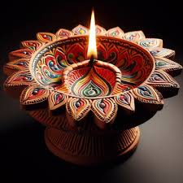

Diwali, also known as Deepavali, is a five-day festival that celebrates the victory of light over darkness, good over evil, and knowledge over ignorance:
When it takes place
Diwali is celebrated annually in autumn, usually in October or November, on a moonless night. The date changes each year.
What it celebrates
Diwali commemorates the return of Lord Rama, Sita, and Lakshmana to Ayodhya after defeating the demon king Ravana. It's also associated with Lakshmi, the goddess of wealth and prosperity, and Ganesha, the god of wisdom.
How it's celebrated
During Diwali, people illuminate their homes, temples, and workspaces with oil lamps, candles, and lanterns. They also make colorful patterns on the floor with rice, flowers, and colored powder, called rangoli.
What it symbolizes
The festival's name comes from the Sanskrit word Deepavali, which means "row of lights". The lights and lamps symbolize both spiritual and physical elements of light.
Who celebrates it
Diwali is primarily a Hindu festival, but it's also celebrated by Jains, Sikhs, and some Buddhists. It's an official holiday in India, Nepal, Sri Lanka, Myanmar, Mauritius, Guyana, Trinidad & Tobago, Suriname, Malaysia, Singapore, and Fiji.
